Portekiz'in Büyüleyici ve Köklü Kültürü
Atlantik rüzgarları ve Akdeniz sıcaklığıyla harmanlanan Portekiz kültürü; Kuzey Minho'nun altın telkari işlemeli geleneksel elbiselerinden Lizbon sokaklarını inleten halk azizleri festivallerine, Keşifler Çağı'nın eşsiz Manuelin taş işçiliğinden mavi-beyaz Azulejo çinilerine uzanan eşsiz bir mirasa sahiptir.
Portekiz'in Geleneksel Kılık Kıyafeti
Kuzeyin bereketli dağ vadilerinden güneyin engin ovalarına ve Atlantik adalarına kadar her bölge; toplumsal statüyü, ailevi mirası ve zanaatkarlığı yansıtan benzersiz giyim gelenekleri geliştirmiştir.
Traje de Viana (Minho / Viana do Castelo Kostümü)
Portekiz'in en ünlü ve ikonik halk kıyafeti olan Traje à Vianesa, Minho bölgesindeki kadınların tarlalarda çalışırken ve bayramlarda giydiği köklü bir geleneği temsil eder. Parlak kırmızı, siyah ve beyaz yün kumaşlardan dikilen kıyafet; el dokuması çiçek desenli geniş etekler, örme renkli önlükler (aventais) ve saçaklı baş örtüleriyle tamamlanır.
Kıyafetin en görkemli parçası, göğsü kaplayan saf altından telkari kolyeler ve dünyaca ünlü Viana Kalbi (Coração de Viana) kolyeleridir. Bu altınlar aile mirası olarak anneden kıza aktarılır, genç kadının çeyizini ve bağımsızlığını simgeler.
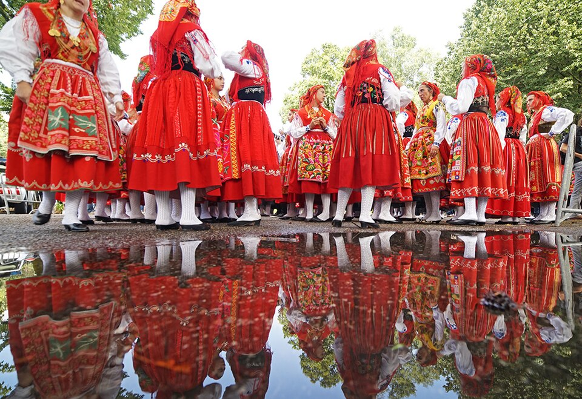
Capa e Batina (Coimbra Akademik Kıyafeti & Pelerin Kültürü)
Avrupa'nın en eski üniversitelerinden biri olan 1290 kuruluşlu Coimbra Üniversitesi'nin öğrencileri tarafından yüzyıllardır giyilen Capa e Batina; siyah cübbe, beyaz gömlek, kravat ve omuzlardan sarkan uzun siyah yün pelerinden oluşur.
Harry Potter Evrenine İlham: Yazar J.K. Rowling, 1990'ların başında Porto'da İngilizce öğretmenliği yaptığı dönemde bu pelerinli öğrencilerden derinden etkilenmiş ve Hogwarts öğrencilerinin cübbelerini tasarlarken Coimbra akademik kıyafetini model almıştır.
Gelenekte bu pelerinler asla yıkanmaz; mezuniyete kadar öğrencinin yaşadığı tüm anıları, sevinçleri ve üniversite tozunu üzerinde taşır. Pelerinin eteğine atılan küçük yırtıklar ise aşıkları ve derin dostlukları simgeler.
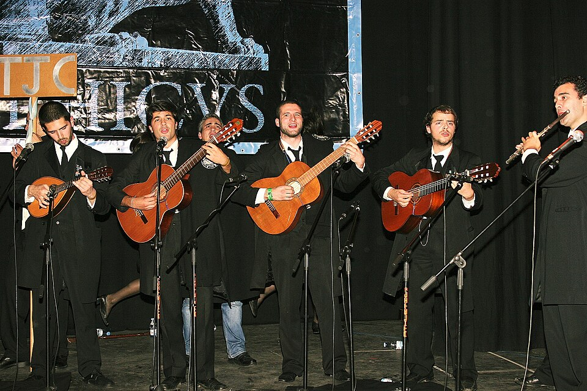
Caretos de Podence (Trás-os-Montes Şeytani Karnaval Kostümü)
Kuzeydoğu Portekiz'in dağlık Podence köyünde her yıl Karnaval döneminde (Entrudo Chocalheiro) ortaya çıkan Caretos; kırmızı, yeşil ve sarı kalın yün püsküllerle baştan aşağıya kaplanmış büyüleyici bir kostümdür.
Bellerine deri kemerlerle bağlanan onlarca pirinç inek çıngırağı (chocalhos) ve tenekeden veya deriden yapılan sivri burunlu şeytani maskeleriyle sokaklarda zıplayarak koşarlar. Bu arkaik ritüel; kışın soğuk karanlığını kovup baharın bereketini uyandırmayı ve toplumu arındırmayı amaçlar.
Bu asırlık halk ritüeli ve eşsiz kıyafet geleneği, 2019 yılında UNESCO tarafından İnsanlığın Somut Olmayan Kültürel Mirası olarak tescil edilmiştir.
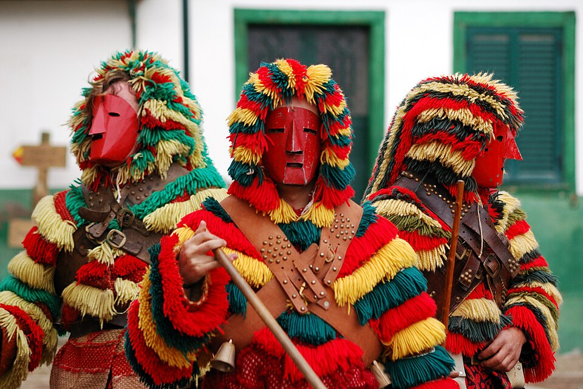
Campino do Ribatejo (Geleneksel Çoban & Atlı Kostümü)
Tejo Nehri kıyısındaki verimli Ribatejo düzlüklerinde serbestçe otlayan dövüş boğalarını ve asil Lusitano atlarını güden geleneksel Portekiz kovboylarına Campino denir.
Campino kıyafeti son derece katı kurallara ve zengin renklere sahiptir: Başa takılan uzun sarkık uçlu yeşil örgü bere ve ucundaki kırmızı ponpon (barrete verde), göz alıcı kırmızı yün yelek (colete encarnado), dik yakalı beyaz gömlek, diz altı lacivert pantolon, beyaz yün çoraplar ve mahmuzlu siyah çizmeler.
Campino'lar at üzerindeyken sürüleri yönlendirmek ve olası boğa saldırılarını savuşturmak için ellerinde pampilho adı verilen 3 metrelik özel ahşap mızraklar taşırlar.
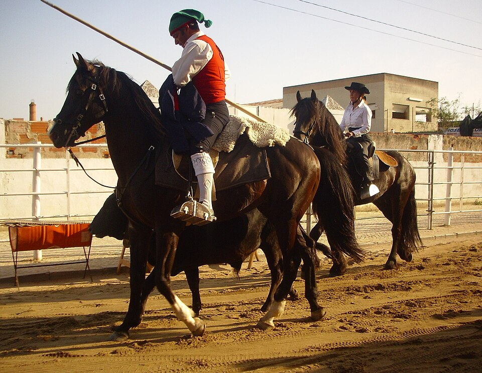
Portekiz'in Diğer Özgün Giyim Gelenekleri
Portekiz'in kıyı kasabalarında ve okyanus adalarında yaşam koşulları giyimi doğrudan şekillendirmiştir:
Varinas (Lizbon Balıkçı Kadınları)
Lizbon sahilinde taze balık satan güçlü kadın figürü. Başlarının üzerine koydukları yuvarlak kumaş yastık (rodilha) üstünde ağır sepetleri dimdik bir zarafetle taşırlar. Kısa dökümlü etekleri ve kendinden emin yürüyüşleriyle Lizbon folklorunun simgesidir.
Traje da Madeira & Carapuça
Madeira Adası'nın geleneksel giysisi; parlak kırmızı çizgili yün etekler, beyaz keten bluzlar ve başa takılan huni benzeri sivri uçlu minyatür yün şapkası (Carapuça) ile tanınır.
Capote e Capelo dos Açores
Azor Adaları'nda 20. yüzyıl ortalarına kadar giyilen koyu mavi/siyah pelerin. Balina kemiğinden yapılan devasa kukuletası kadının yüzünü tamamen gölgede bırakarak Atlantik rüzgarlarından ve bakışlardan korurdu.
Geleneksel Bayramlar ve Festivaller
Portekiz'de festivaller sadece dini kutlamalar değil; sokakların dans pistine dönüştüğü, havai fişeklerin gökyüzünü yaktığı ve asırlık toplumsal ritüellerin coşkuyla yaşatıldığı milli karnavallardır.
Festa de Santo António (Lizbon - Halk Azizleri Bayramı)
Her yıl 12-13 Haziran tarihlerinde kutlanan Festa de Santo António, Lizbon halkının koruyucu azizine adadığı yılın en renkli ve çılgın sokak festivalidir. Başkentin tarihi Alfama, Mouraria, Graça ve Bica mahalleleri rengarenk kağıt fenerler, çiçekler ve flamalarla baştan başa donatılır.
Marchas Populares Korteji: 12 Haziran gecesi tüm mahalleler görkemli elbiseler dikip Avenida da Liberdade bulvarında müzik eşliğinde yarışır. Aşıklar birbirlerine küçük yeşil fesleğen saksıları (manjerico) ve üzerine kafiyeli aşk manileri (quadras) iliştirilmiş kağıt karanfiller hediye eder.
Ayrıca Aziz António'nun "evlilik azizi" olduğuna inanıldığı için belediye tarafından onlarca çiftin katıldığı geleneksel Casamentos de Santo António (Toplu Halk Nikahı) düzenlenir.
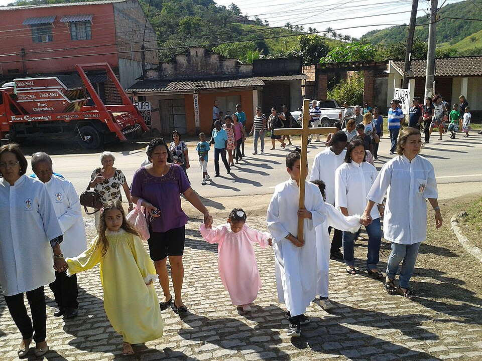
Festa de São João do Porto (Porto Aziz João Festivali)
23-24 Haziran gecesi Porto sokaklarında patlayan São João, Avrupa'nın en neşeli ve samimi sokak kutlamalarından biridir. Yüz binlerce insan Douro Nehri kıyısına (Ribeira) dökülür ve sabahın ilk ışıklarına kadar dans eder.
Plastik Çekiç Geleneği (Martelinhos): Yoldan geçen herkes, birbirinin başına vıy vıy ses çıkaran yumuşak plastik çekiçlerle şakayla vurur; bu hareket iyi şans ve dostluk dileğini temsil eder. Eski pagan döneminde ise sarımsak çiçeği koklatılırdı.
Gece yarısı binlerce parıldayan kağıt sıcak hava balonu (balões de São João) gökyüzüne salınır ve tarihi Dom Luís I Köprüsü üzerinde muhteşem bir havai fişek ve müzik senfonisi icra edilir.
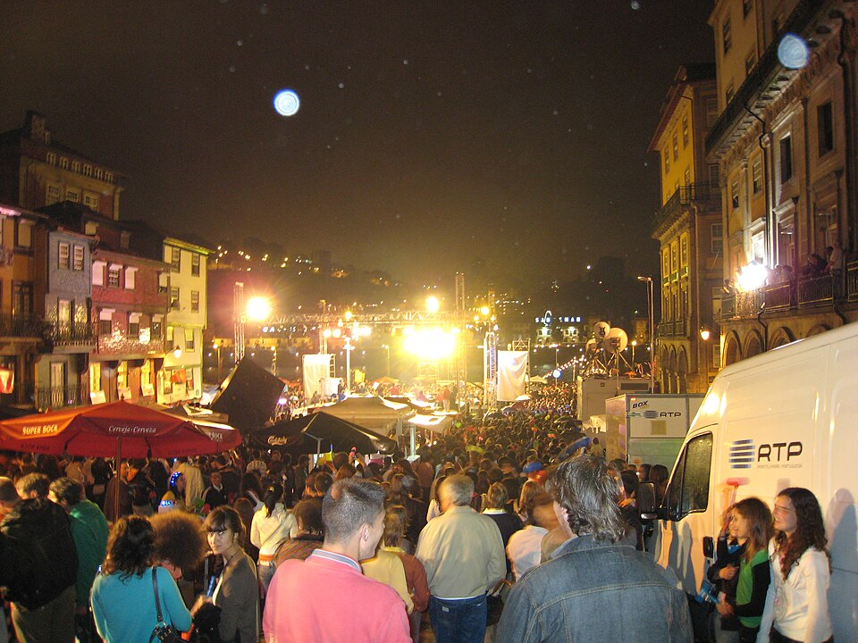
Festa dos Tabuleiros (Tomar - Tepsi & Ekmek Festivali)
Orta Portekiz'in tarihi Tomar kentinde her dört yılda bir Temmuz ayında düzenlenen Festa dos Tabuleiros, kökleri 14. yüzyıl Kraliçe Aziz İsabel ve Kutsal Ruh Tarikatı'na uzanan pagan ve Hristiyan sentezi olağanüstü bir halk bayramıdır.
Festivalin ana geçit töreninde yüzlerce genç kadın, başlarının üzerinde kendi boylarına eşit ve yaklaşık 15 kilogram ağırlığında olan devasa taç kuleler (tabuleiros) taşır. Bu kuleler; kamış iskelet üzerine dizilmiş 30 adet somun ekmek, binlerce el yapımı renkli kağıt çiçek, buğday başakları ve en tepesinde beyaz bir barış güvercini veya Mesih Haçı ile donatılır.
Geleneksel beyaz elbiseli kızlara koyu takım elbiseli partnerleri eşlik eder; saatlerce süren bu büyüleyici denge yürüyüşü Tomar sokaklarını bir açık hava sanat galerisine çevirir.
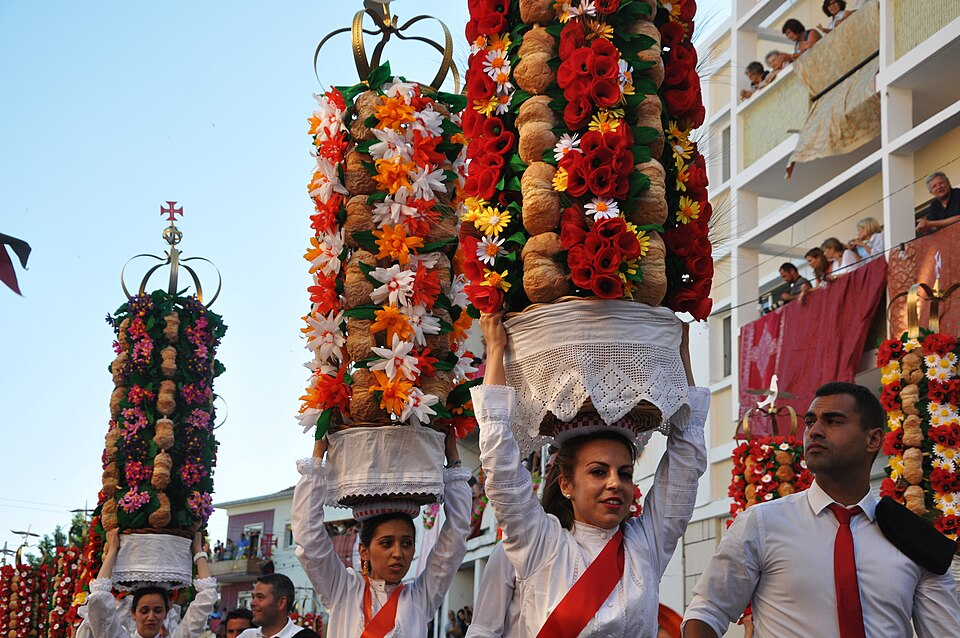
Semana Santa de Braga (Braga Kutsal Hafta Kutlamaları)
Portekiz'in manevi başkenti olarak anılan Braga'da Paskalya öncesindeki Kutsal Hafta, tüm ülkenin en görkemli ve mistik dini törenlerine sahne olur.
Procissão do Fogaréu ve Farricocos: Çarşamba gecesi sokak aydınlatmaları tamamen kapatılır. Çıplak ayaklı, başlarına sivri koni siyah kukuletalar geçirmiş kefaret alayı (Farricocos), ellerinde alev alev yanan katranlı dev meşaleler ve çan sesleriyle sessiz sokakları aydınlatır.
Ayrıca şehir halkı günlerce çalışarak sokakları taze çiçek yaprakları, aromatik çam iğneleri ve renkli talaşlarla bezenmiş kilometrelerce uzunlukta dini mozaik halılarla (tapetes floridos) kaplar.
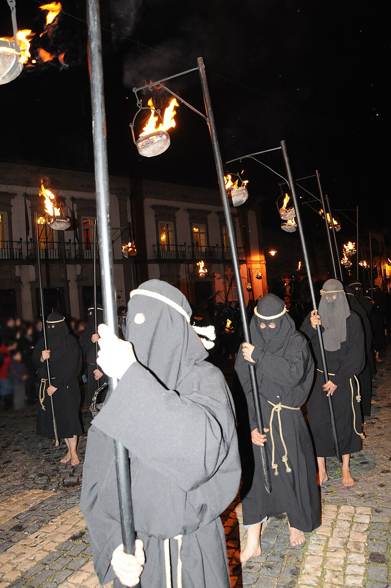
Portekiz'in Diğer Büyük Festivalleri
Ülkenin dört bir yanında gençlik ve inanç ateşiyle yanan diğer simgesel kutlamalar:
Queima das Fitas (Şerit Yakma Festivali)
Mayıs ayında Coimbra ve Porto üniversitelerinde mezun öğrencilerin fakülte renklerindeki kurdeleleri dev kazanlarda yakarak mezuniyeti kutladığı 1 haftalık öğrenci karnavalı. Gece yarısı eski katedral basamaklarında söylenen Coimbra Fado serenatları tüyleri diken diken eder.
Romaria d'Agonia (Viana do Castelo)
Ağustos ayında düzenlenen Portekiz'in en büyük folklorik hac bayramı. Balıkçı teknelerinin çiçeklerle donatıldığı nehir geçitleri ve binlerce genç kadının boyunlarında yüz binlerce euro değerinde telkari altınla yürüdüğü görkemli Mordomia Geçidi ile ünlüdür.
Torres Vedras & Loulé Karnavalları
Portekiz'in en hicivli ve eğlenceli sokak karnavalları. Politikacıların dev karikatür maketleri (Matrafonas) ve yerel Zés Pereiras davulcularının ritimleri eşliğinde yüz binlerce insan günlerce sokaklarda eğlenir.
Portekiz Mimari Kültürü ve Anıtsal Mirası
Keşifler Çağı'nın okyanus zaferlerini taşa işleyen Manuelin tarzı, binaların cephelerine hikayeler anlatan mavi-beyaz çiniler ve büyük deprem sonrası doğan öncü mühendislik harikaları.
Manuelin Mimarisi (Estilo Manuelino)
16. yüzyıl başında Kral I. Manuel'in saltanatında doğan ve dünyada yalnızca Portekiz'e özgü olan Manuelin tarzı, Geç Gotik ile Rönesans'ın okyanus denizciliğiyle birleşimidir.
Taş ustaları; gemi halatlarını (cordas), yosunları, midye kabuklarını, mercan resiflerini, deniz fenerlerini, krallığın amblemi olan Halkalı Küre'yi (Esfera Armilar) ve Mesih Haçı'nı dantel gibi kireçtaşına işlemiştir.
Şaheserler: Lizbon'da UNESCO Dünya Mirası olan Mosteiro dos Jerónimos ve Torre de Belém ile Tomar'daki İsa Manastırı'nın dünyaca ünlü bölüm penceresi (Janela do Capítulo de Tomar) bu mimarinin zirvesini oluşturur.
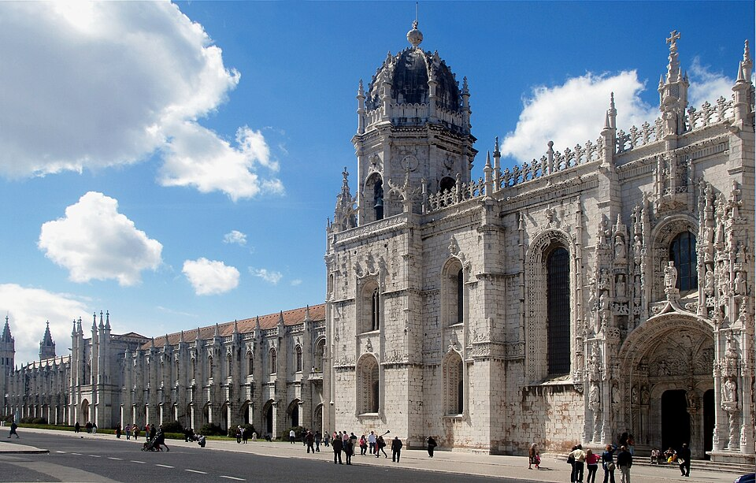
Torre de Belém (Belém Kulesi ve Askeri Mimari)
1514-1519 yılları arasında Tejo Nehri'nin Lizbon girişini korumak amacıyla inşa edilen Torre de Belém, askeri savunma mimarisi ile Manuelin estetiğinin dünyadaki en kusursuz örneğidir.
Kule; Mağribi gözetleme kubbeleri, Venedik tarzı loggialar, kalkanlar üzerine oyulmuş Mesih Tarikatı haçları ve deniz seviyesindeki topçu bataryalarıyla donatılmıştır. Kaşiflerin okyanuslara yelken açtığı ve eve dönüşte ilk gördükleri kutsal karşılama simgesidir.
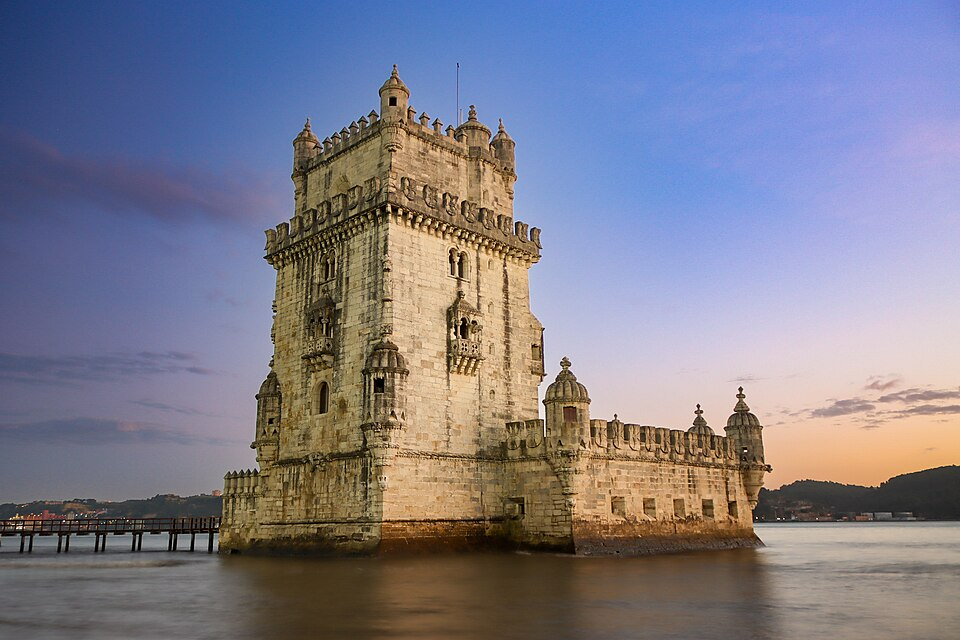
Azulejo Sanatı (Geleneksel Portekiz Çinileri)
Arapça kökenli "al-zulayj" (cilalı küçük taş) sözcüğünden gelen Azulejo, 500 yıldır Portekiz'in kiliselerini, saraylarını, tren garlarını ve konut cephelerini kaplayan ulusal görsel kimliğidir.
17. ve 18. yüzyılda Hollanda Delft porselenlerinden ve Uzak Doğu motiflerinden esinlenerek karakteristik mavi-beyaz (azul e branco) tona evrilmiştir. Bu çiniler binaları yazın sıcaktan, kışın Atlantik neminden korumakla kalmaz; devasa panolar halinde savaşları, keşif seferlerini ve kutsal efsaneleri görsel bir roman gibi anlatır.
Porto São Bento Tren Garı: Jorge Colaço tarafından yapılan ve yaklaşık 20.000 el boyaması çiniden oluşan istasyon salonu, Portekiz tarihinin en görkemli savaşlarını gözler önüne serer ve dünyanın en güzel garlarından biri kabul edilir.
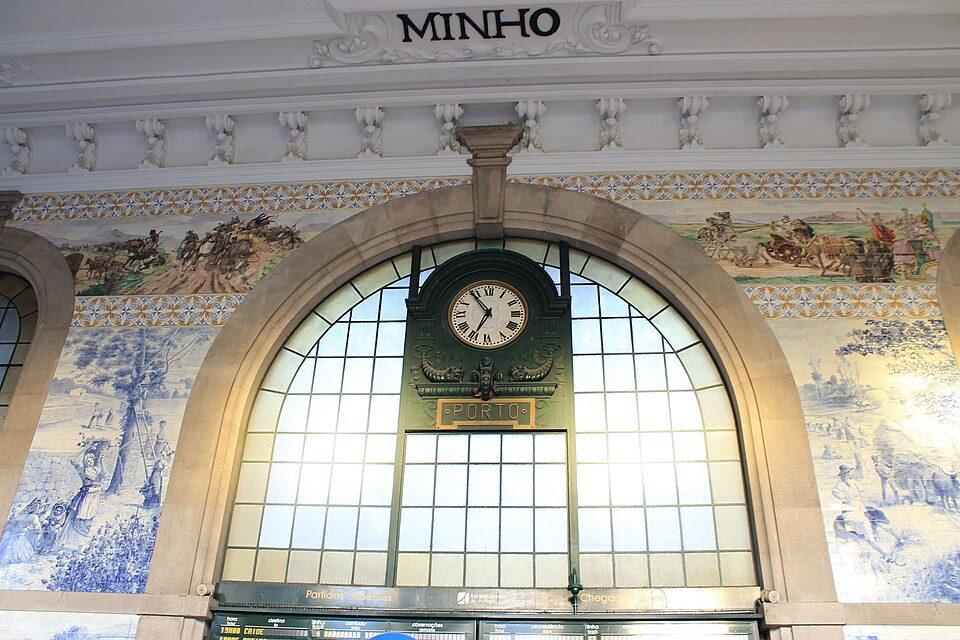
Pombalin Mimarlık ve "Gaiola Pombalina"
1 Kasım 1755'te başkent Lizbon'u yerle bir eden 8.7 büyüklüğündeki büyük deprem ve tsunaminin ardından, Başbakan Marquês de Pombal öncülüğünde hayata geçirilen şehirleşme tarzıdır.
Gaiola Pombalina (Pombalin Kafesi): Binaların duvarları içine gizlenen esnek ahşap kafes strüktürü, dünyadaki ilk depreme dayanıklı önü kesici mühendislik icadıdır. Deprem anında binanın esneyip yıkılmasını önleyen bu modeller, askeri birliklerin maketler etrafında ritmik yürüyüşler yapmasıyla sarsıntı testlerinden geçirilmiştir.
Baixa bölgesinin ızgara planlı geniş caddeleri, yangın sıçramasını önleyen yüksek taş bölme duvarları ve Praça do Comércio meydanı, modern kentsel planlamanın dünyadaki ilk örneklerindendir.
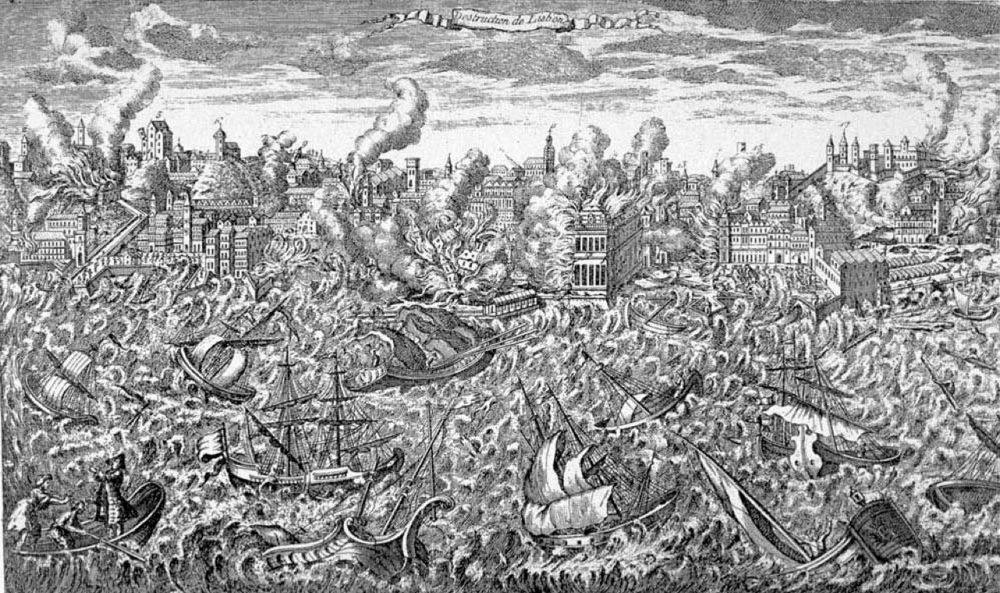
Portekiz Baroku ve "Talha Dourada" Sanatı
18. yüzyılda Kral V. João döneminde Brezilya'dan gelen tonlarca altının ülkeye akmasıyla Portekiz, Avrupa'nın en zengin Barok ve Rokoko mimari eserlerini inşa etmiştir.
Talha Dourada (Yaldızlı Ahşap Oymacılık): Ahşabın ince ince oyulduktan sonra üzerine som altın varakların yapıştırılması sanatıdır. Porto'daki Igreja de São Francisco kilisesinin içi adeta saf altından bir mücevher kutusudur; tonozlar, sütunlar ve heykellerde yaklaşık 300 kilogram saf altın kullanılmıştır.
Ayrıca Braga'daki Bom Jesus do Monte tapınağının granit heykeller ve çeşmelerle bezeli devasa zikzak Barok merdivenleri, UNESCO Dünya Mirası olarak kabul edilmektedir.
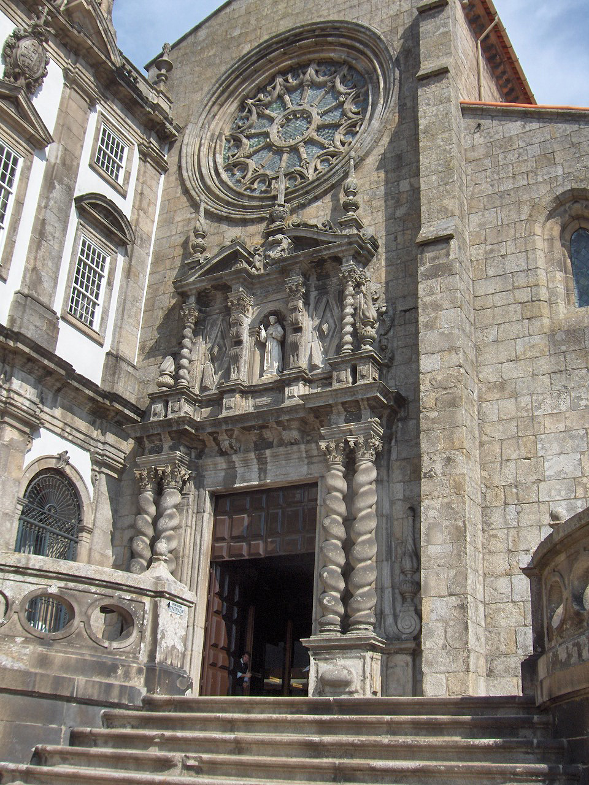
Casas de Santana (Madeira Üçgen Saz Evleri)
Madeira Adası'nın kuzeyindeki Santana kasabasında yer alan geleneksel Casas Típicas de Santana, üçgen piramidal biçimleri ve yere kadar inen kalın saz çatılarıyla masalsı bir görünüme sahiptir.
Bu evler bölgenin bol yağış alan dik yamaçlarına uyum sağlamak üzere tasarlanmıştır; eğimli saz çatılar yağmur suyunun hızla akmasını sağlar ve iç mekanı kışın sıcak, yazın serin tutar. Ahşap cepheler geleneksel olarak kırmızı, beyaz ve parlak kobalt mavisine boyanır.
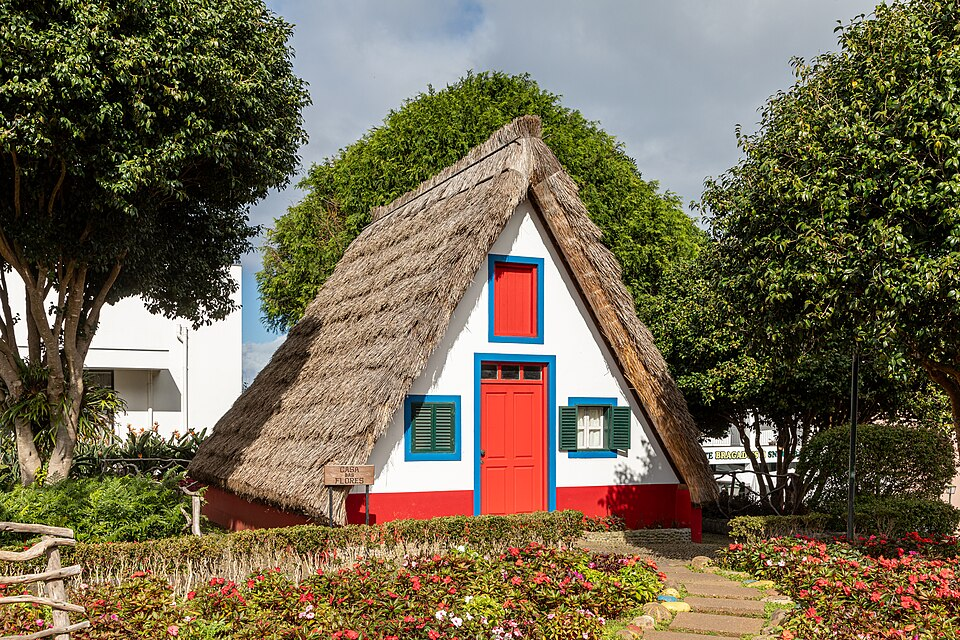
Palheiros da Costa Nova (Aveiro Çizgili Evleri)
Aveiro lagünü kenarındaki Costa Nova do Prado sahilinde sıralanan Palheiros, dikey ve yatay rengarenk çizgileriyle (kırmızı-beyaz, mavi-beyaz, yeşil-beyaz, sarı-beyaz) dünyanın en fotojenik balıkçı mimarisidir.
19. yüzyılda yerel balıkçılar tarafından ağlarını, oltalarını ve teknelerini saklamak için ahşap depolar olarak inşa edilmiş, daha sonra sahil yazlıklarına dönüştürülmüştür. Çizgili parlak renkler, sisli Atlantik sabahlarında balıkçıların denizden dönerken kendi evlerini kolayca seçebilmesini sağlardı.
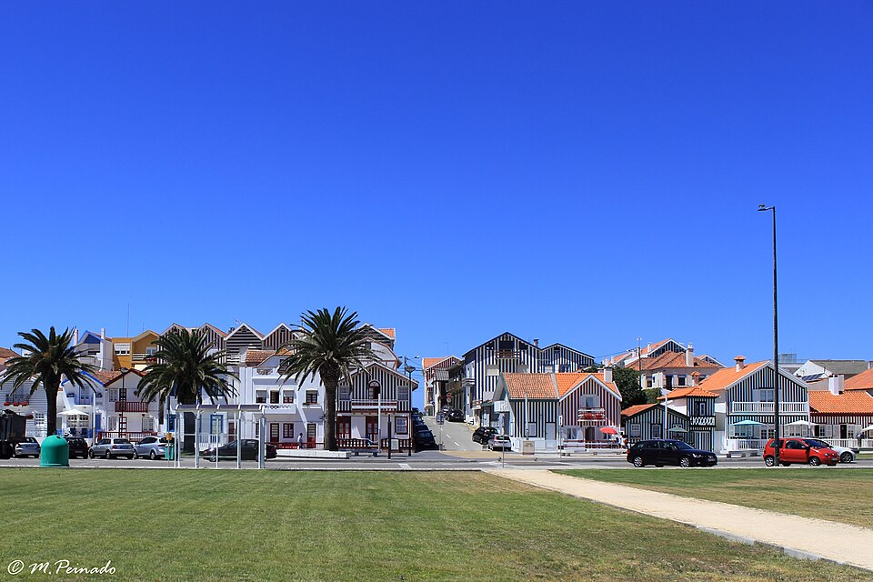
Palácio Nacional da Pena (Sintra Masal Sarayı)
Sintra dağlarının sisli zirvesinde kayalıklar üzerine inşa edilen Pena Ulusal Sarayı, Portekiz Romantizm akımının dünyadaki en eksantrik ve büyüleyici başyapıtıdır.
Kral II. Ferdinand'ın hayal gücüyle şekillenen saray; Neo-Manuelin, Neo-Gotik, Neo-Mağribi ve Neo-Rönesans üsluplarını cesurca harmanlar. Canlı sarı, kırmızı ve mor kuleleri, mitolojik deniz canavarı Triton kabartması ve egzotik orman bahçesiyle UNESCO Dünya Mirası listesindedir.
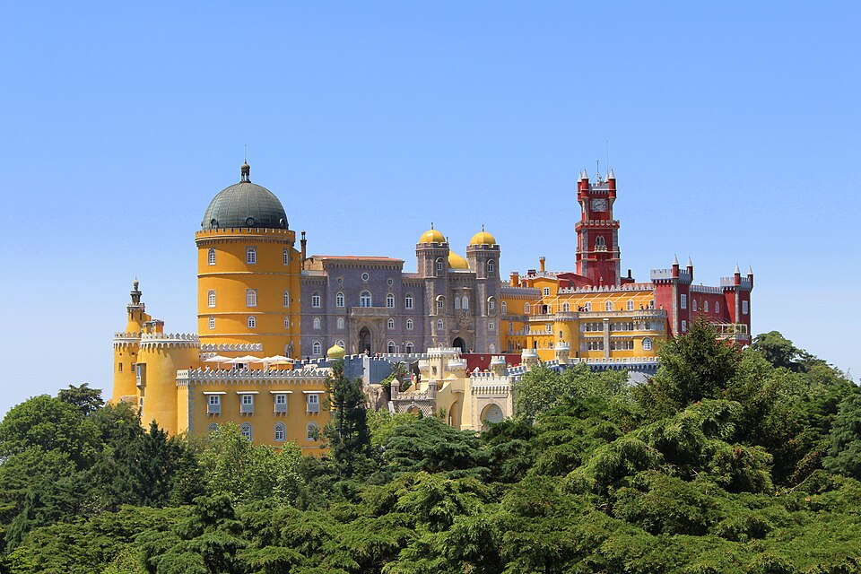
Portekiz Kültürel Sembolleri & Ruhu
Hüznü ve hasreti anlatan Fado ezgilerinden, adaletin simgesi Barcelos Horozu'na ve saç teli inceliğinde örülen altın telkari sanatına.
Fado & Saudade
UNESCO Somut Olmayan Kültürel Mirası olan Fado, Portekiz ruhunun sesidir. 12 telli Portekiz gitarı (Guitarra Portuguesa) eşliğinde siyah şallı sanatçıların söylediği şarkılar; ayrılık, okyanus hasreti, kader ve telafisi olmayan derin özlem anlamına gelen "Saudade" duygusunu dile getirir.
Galo de Barcelos
Portekiz'in milli uğur simgesi olan siyah, kırmızı ve sarı benekli Barcelos Horozu; haksız yere suçlanan bir hacının fırındaki pişmiş horozun ayağa kalkıp öteceğini söyleyerek masumiyetini kanıtlaması efsanesine dayanır. Günümüzde adalet, inanç ve iyi şansın timsalidir.
Filigrana Portuguesa
Kuzey Portekiz'in (Gondomar ve Póvoa de Lanhoso) bin yıllık altın zanaatı. Som altın veya gümüş tellerin saç kılı inceliğinde bükülerek dantel gibi örülmesiyle üretilen Viana Kalpleri (Coração de Viana) ve taçlar, geleneksel Portekiz kadın şıklığının doruk noktasıdır.